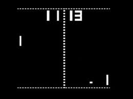

Taller de node.js
Haciendo un pong en red
Francisco García Díaz / @PacoPGD
Jesús Rodríguez Pérez / @jesusnoseq
Controles
Puedes navegar con → y espacio.
Con Ctrl+click puedes hacer zoom.
Esc para ver un overview de la presentación.
d para mostrar las notas.
En GitHub
Esta presentación esta realizada con reveal.js de Hakim El Hattab
Introducción
En la siguiente sección se introducirán los conceptos básicos que se necesitan para trabajar
PONG
Es un juego basado en el tenis de mesa en el que hay dos jugadores controlado las paletas y tienen que golpear la bola para que esta pase por el lado del rival sin que este pueda devolverla.
En este taller se realizará este juego el cual permitirá el juego en red gracias a node.js, el juego se realizará en HTML5.
HTML 5: Canvas
Canvas (lienzo en inglés) es un elemento HTML incorporado en HTML5 que permite la generación de gráficos dinámicamente por medio del scripting
El objeto canvas puede ser accedido a través de JavaScript, permitiendo generar gráficos 2D, juegos, animaciones y composición de imágenes
HTML 5: websockets
Según wikipedia:
Tecnología que proporciona un canal de comunicación bidireccional y full-duplex sobre un único socket TCP...
Node.js
Jade
Express
Socket.io
Nos permite manejar eventos en tiempo real con node.js. https://github.com/learnboost/socket.io/wiki
Emitiendo con socket.io
// Emite al socket actual de cliente que está conectado
socket.emit('evento', datos);
// Emite a todos los clientes conectados
io.sockets.emit('evento', datos);
// Envia un mensaje a todos los conectados menos al que socket que lo envia
socket.broadcast.emit('evento', datos);
Pong.js "Cliente"
Pong.js es el encargado de recibir los datos de entrada que serán las coordenadas de los dos jugadores, la posición de la bola y los resultados y de enviar los datos de salida al servidor, que en este caso serian las pulsaciones de teclado.
Paso 1 - Instalación y Estructura de ficheros
1.- Descargar el esqueleto de la aplicación.2.- Para poder instalar los modulos y dependencias necesarios introduciremos el comando npm install en la raiz del proyecto "Donde tenemos el fichero package.json".
node_modules: Contiene todos los modulos de node necesarios para trabajar.
public: En este directorio tenemos el cliente de juego y la hoja de estilos
views: Donde tenemos el index de la web que contendrá la aplicación
nodepong.js: Donde tenemos el servidor y la lógica de juego.
package.json:
Paso 2 - El juego
El cliente pong.js tiene las siguientes funciones que se encargarán de pintar todos los elementos del juego. Sus funciones serán las siguientes: function init(data): Esta función actua como "main" de nuestro cliente. function setFullScreen(data): Esta función nos permite poner el juego a pantalla completa function paint(data): Esta función se encarga de pintar los distintos elementos en pantalla function paintLet(): Pintado de red de juego "Usada para simplificar paint" function paintData(data): Pintado de datos de juego "Usada para simplificar paint"Paso 3 - Comunicacion
Paso 4 - Todo junto
Vertical Slides
Slides can be nested inside of other slides, try pressing down.
Basement Level 1
Press down or up to navigate.
Basement Level 2
Cornify

Basement Level 3
That's it, time to go back up.
Point of View
Press ESC to enter the slide overview. Hold down alt and click on any element to zoom in on it using zoom.js. Alt + click anywhere to zoom back out.
rvl.io
If you don't like writing slides in HTML you can use the online editor rvl.io.
Works in Mobile Safari
Try it out! You can swipe through the slides and pinch your way to the overview.
Marvelous Unordered List
- No order here
- Or here
- Or here
- Or here
Fantastic Ordered List
- One is smaller than...
- Two is smaller than...
- Three!
Transition Styles
You can select from different transitions, like:
Cube - Page - Concave - Zoom - Linear - None - Default
Themes
Reveal.js comes with a few themes built in:
Sky - Beige - Simple - Serif - Night - Default
* Theme demos are loaded after the presentation which leads to flicker. In production you should load your theme in the
<head>
using a
<link>
.
Global State
Set
data-state="something"
on a slide and
"something"
will be added as a class to the document element when the slide is open. This lets you
apply broader style changes, like switching the background.
"blackout"
"soothe"
Custom Events
Additionally custom events can be triggered on a per slide basis by binding to the
data-state
name.
Reveal.addEventListener( 'customevent', function() {
console.log( '"customevent" has fired' );
} );
Clever Quotes
These guys come in two forms, inline: The nice thing about standards is that there are so many to choose from
and block:
For years there has been a theory that millions of monkeys typing at random on millions of typewriters would reproduce the entire works of Shakespeare. The Internet has proven this theory to be untrue.
Pretty Code
function linkify( selector ) {
if( supports3DTransforms ) {
var nodes = document.querySelectorAll( selector );
for( var i = 0, len = nodes.length; i < len; i++ ) {
var node = nodes[i];
if( !node.className ) ) {
node.className += ' roll';
}
};
}
}
Courtesy of highlight.js.
Intergalactic Interconnections
You can link between slides internally, like this.
Fragmented Views
Hit the next arrow...
... to step through ...
-
any type - of view
- fragments
Fragment Styles
There's a few styles of fragments, like:
grow
shrink
roll-in
fade-out
highlight-red
highlight-green
highlight-blue
Spectacular image!

Export to PDF
Presentations can be exported to PDF, below is an example that's been uploaded to SlideShare.
Take a Moment
Press b or period on your keyboard to enter the 'paused' mode. This mode is helpful when you want to take disctracting slides off the screen during a presentation.
Stellar Links
It's free
reveal.js and rvl.io are entirely free but if you'd like to support the projects you can donate below. Donations will go towards hosting and domain costs.